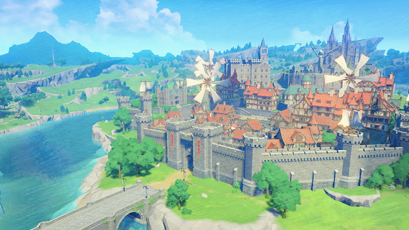

Một cặp anh em du hành qua các vì sao và đến thăm các thế giới khác nhau tới vùng đất Teyvat, nhưng phát hiện ra rằng đất nước Khaenri'ah đang trên bờ sụp đổ. Trong lúc cố gắng rời đi, cặp song sinh bị chia cắt bởi một vị thần vô danh tự xưng là "Người duy trì Thiên Lý", người phong ấn và chia rẽ hai anh em. Năm trăm năm sau, người bị phong ấn - được gọi là "Nhà Lữ Hành" - thức tỉnh và gặp được Paimon. Hai người đi đến thành phố Mondstadt gần đó để bắt đầu cuộc tìm kiếm người song sinh mất tích của Nhà Lữ Hành. Cả hai đến thành phố Mondstadt và chạm trán với một con rồng tên là Phong Ma Long đang tấn công thành phố. Được hỗ trợ bởi một thực thể vô danh, Nhà Lữ Hành chống lại Phong Ma Long và được Jean - Đội Trưởng Đại Diện của Đội Kỵ Sĩ Tây Phong, công nhận. Nhà Lữ Hành giúp các Kỵ sĩ khôi phục trật tự cho khu vực, và sau đó gặp Venti, một thi nhân hát rong, người đưa ra kế hoạch ngăn chặn Phong Ma Long, tên thật là Dvalin. Venti yêu cầu họ lấy cắp cây đàn Thiên Không để cậu ấy có thể chơi nó cho Dvalin, giúp nó bình tĩnh. Sau khi lấy được cây đàn Thiên Không, trước đó bị đánh cắp bởi thành viên của một tổ chức bí ẩn có tên là Fatui, Venti cố gắng trấn an Dvalin nhưng nhận ra rằng con rồng đang bị thao túng bởi Giáo Đoàn Vực Sâu, một tổ chức ma vật tự xưng là kẻ thù của nhân loại. Danh tính thực sự của Venti được tiết lộ: cậu chính là Barbatos - Phong Thần, và cũng là người đã hướng dẫn Nhà Lữ Hành trong cuộc chiến giữa họ với Dvalin. Nhà Lữ Hành cùng với Jean, Diluc và Venti truy đuổi Dvalin đến Phế Tích Phong Long và giải phóng nó khỏi ảnh hưởng của Giáo Đoàn Vực Sâu. Quay trở lại Mondstadt, Venti bị phục kích bởi Quan Chấp Hành thứ 8 Fatui La Signora - kẻ đã đánh cắp Gnosis Phong của cậu.
